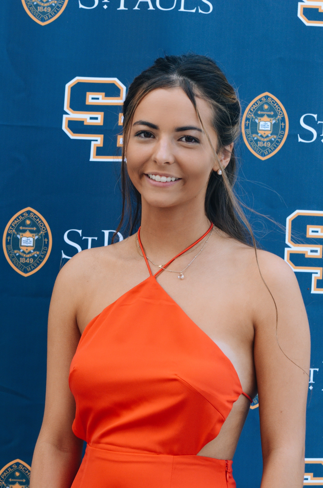

Eva Booth
Journalism student

Contact details
Journalism student seeking leadership opportunities
Education
University of Maryland (Philip Merrill College)
Fall 2019- Present
- Candidate for Bachelor of Science in Journalism-May2023
- Cumulative GPA: 3.5/4.0
- Member of Terpski the skiing club
- Member of the Zeta Tau Alpha sorority
St. Paul's School for Girls
Fall 2012-Spring 2019
- GPA: 92.87/100.00
- National Spanish Honors Society (2017)
- Honor Roll (2016-2019)
- JV Field Hockey Captain (2016)
Work Experience
Lead Hostess
Carrabba's Italian Grill
March 2019-Present
- Assisted in opening and closing the restaurant
- Greeted customers
- Bussed tables
- Monitored table wait
Server
Ropewalk Restaurant
June 2021-August 2021
- Greeted customers
- Provided customers with a detailed overview on menu items
- Answered questions about dish preparation
- Ensure personal levels of attention during meal
Server, Food Runner, Hostess
The Angler Restaurant
June 2021-August 2021
- Greeted customers
- Monitored table wait
- Guided customers to their desginated table
- Assisted in adding correct sauces and sides to each food order
- Served customers food order
- Answered questions about dish preparation
- Ensure personal levels of attention during meal
Junior Sales Associate
Cloud 9 Clothing
August 2017- April 2018
- Worked the cash register
- Assisted in care for customers
- Wrote in the daily journal for store records
Leadership and Service
Bridges (3+) Honors Society Inductee
- Assist Baltimore city students in sports activities, guided activities, and homework activities.
- Lead activities at annual Holiday dinner
- Awarded to volunteers in the Bridges program who spent 3 or more seasons volunteering with Bridges
National Academy of Future Scientists and Technologists
- Inducted in 2016
- Personal invite to attend the conference located in Massachusetts
- Awarded to a high school student for outstanding academic achievement, leadership potential, and
determination to serve humanity in the field of science and technology
- Highly selective
Skills
- CPR Certified
- Experience with nannying children
- Leadership